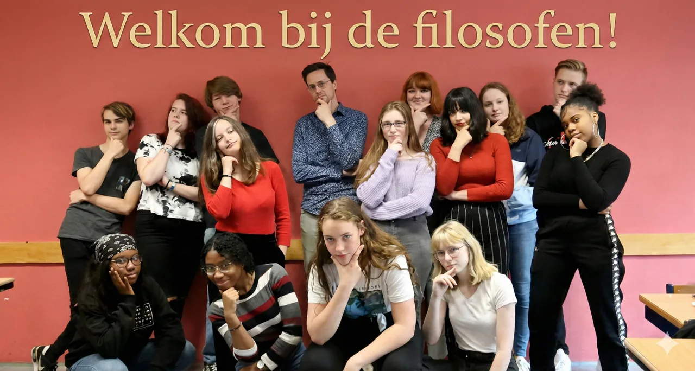
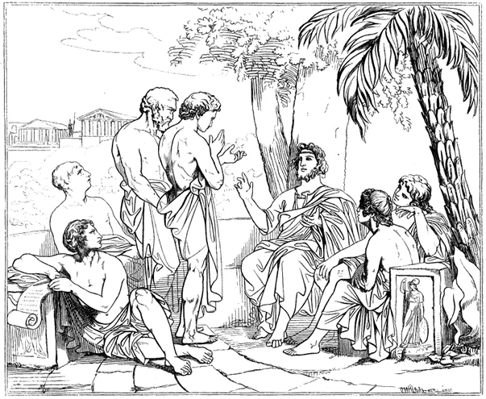

Mag je liegen om iemand te beschermen?
Is een mens meer dan zijn brein? Wanneer is een oorlog rechtvaardig? Bestaat er zoiets als ‘de waarheid’? En ben je echt vrij als je doet wat je wilt?
In filosofie onderzoek je dit soort vragen. Je leert scherp denken, goed luisteren en je eigen standpunt verdedigen. Je verwerft kennis en vaardigheden, maar uiteindelijk gaat het om jóuw eigen denken, niet dat van een ander.
Filosofie leert je niet wát je moet denken, maar hóé je kunt denken.
Lesmateriaal
Alle boekjes per leerjaar. Een boekje opent als pdf in een nieuw tabblad.
4 vwo
5 vwo
6 vwo
Examenthema: de vraag naar de mens in relatie tot techniek en wetenschap
- Spel De arena
- Spel De Techbro’s
- Video Uitlegvideo’s van Ben en Rob
Spellen en tests
Leer filosofie door te spelen en te experimenteren.
- Wat voor soort denker ben jij? Welke intellectuele deugden zijn jouw kracht? Waar liggen je uitdagingen? En welke filosoof past bij jouw manier van denken? Start de test
- Socrates op de Agora Versterk, bevraag en herzie je eigen antwoord in vijf dossiers. Bij 4 vwo, Socrates voor het tribunaal
- Logica Arena Train je logisch denkvermogen met drogredenen en argumenten. Bij 4 vwo, Socrates voor het tribunaal
- Wie het weet Plato’s grot in twee rondes: eerst zit je zelf aan de wand, daarna legt Socrates uit wat je meemaakte. Speel met koptelefoon. Bij 4 vwo, Socrates voor het tribunaal
- Trolley Simulator Verken ethische dilemma’s in dit klassieke gedachte-experiment. Bij 4 vwo, ethiek
- De arena De denkers van het examen boksen tegen elkaar in duels over stellingen. Bij 6 vwo, examenthema
- De Techbro’s Satirisch spel: bestuur een techbedrijf en ontdek welk mensbeeld er achter je keuzes zit. Bij 6 vwo, examenthema
Gemaakt door leerlingen
Filosofiefilms, essays en lessen van leerlingen. De films openen op YouTube.

Welkom bij de Filosofen!
Talkshow
Essaybundel De Jonge Denker
Het filosofisch essay is een doordacht betoog waarin leerlingen een “grote vraag” uitpluizen. Je begint met een prikkelend citaat, onderzoekt wat er op het spel staat, weegt argumenten tegen elkaar af en werkt via zorgvuldige redeneringen naar een eigen conclusie toe.
De bundel is een selectie van de beste essays. Uitgelicht: “Is egoïsme het probleem van de mensheid?” (Janine), “Zijn wij ons brein?” (Alyssa) en “De Strijd om Erkenning: Zijn de Maghreb-landen Arabisch of Amazigh?” (Kassim).
Download de bundel (pdf)Zelf een filosofieles ontwerpen
Wil je zelf aan de slag als filosofiedocent? Bekijk lesideeën van leerlingen die zelf een filosofische les hebben ontworpen en gegeven. Met prikkelende vragen, bekende filosofen en praktische tips om je eigen les op te zetten.
Bekijk de lesideeënIs filosofie iets voor jou?
Filosofie is een keuzevak in de vrije ruimte en past bij alle profielen. Je onderzoekt grote vragen over vrijheid, rechtvaardigheid, waarheid en identiteit, en verbindt ideeën van klassieke en moderne denkers met actuele thema’s als technologie, democratie en verantwoordelijkheid.
In de les filosoferen we gezamenlijk als klas en in kleine groepjes. Je leert precies luisteren, scherp doorvragen en zorgvuldig redeneren. In de vijfde klas kies je voor een praktische opdracht tussen het maken van een filosofiefilm of het ontwerpen van een eigen filosofieles.

Dit vak past bij je als je...
- Houdt van moeilijke vragen waar geen simpel antwoord op is
- Graag discussieert en samen redeneert
- Je mening wilt verdiepen met sterke argumenten
- Openstaat voor nieuwe en andere perspectieven
- Nieuwsgierig bent naar hoe de wereld in elkaar zit
Wat heb je eraan?
- Zelfvertrouwen in het formuleren en verdedigen van je ideeën
- Academische vaardigheden: analyseren, redeneren, schrijven
- Scherper leren denken over maatschappelijke vraagstukken
- Sterke voorbereiding op universitaire studies
Bijvoorbeeld psychologie, rechten, politicologie, AI, filosofie, journalistiek en geneeskunde.
Praktische informatie
- Profiel
- Keuzevak, combineerbaar met alle profielen
- Studielast
- 3 lesuren per week in de bovenbouw (4, 5 en 6 vwo)
- Toetsing
- Essays, presentaties, filosofische gesprekken en een centraal eindexamen
- Voorkennis
- Geen voorkennis nodig, alleen nieuwsgierigheid en zin om na te denken